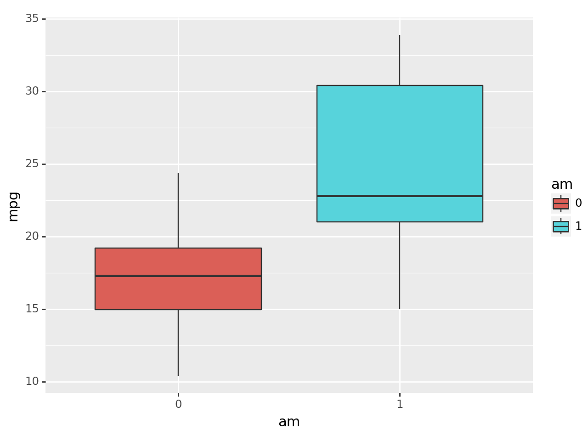
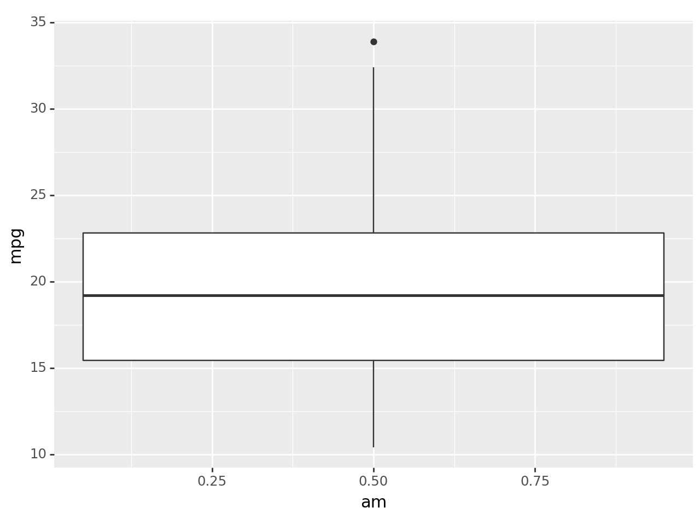
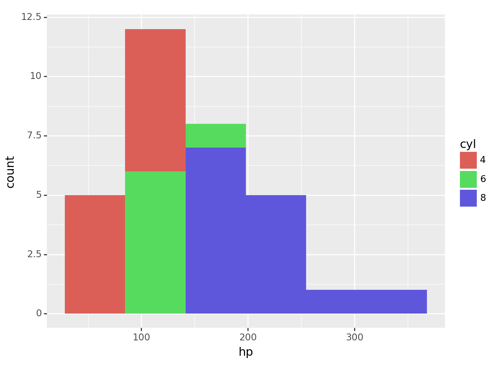
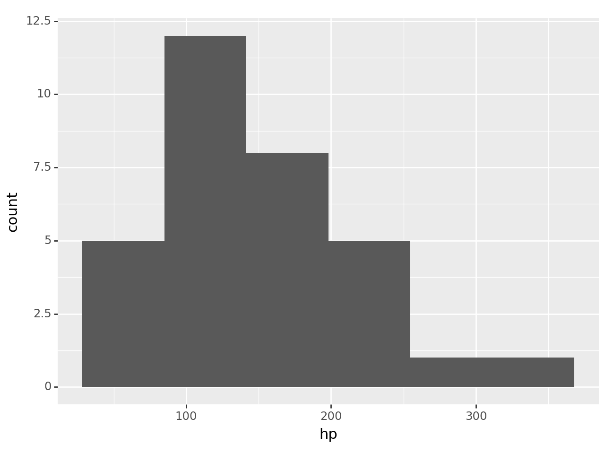
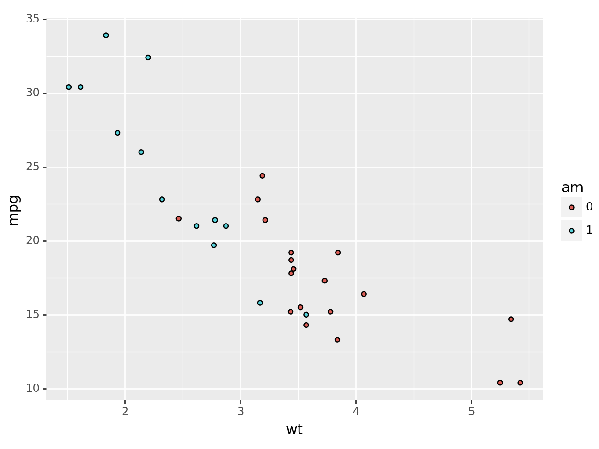
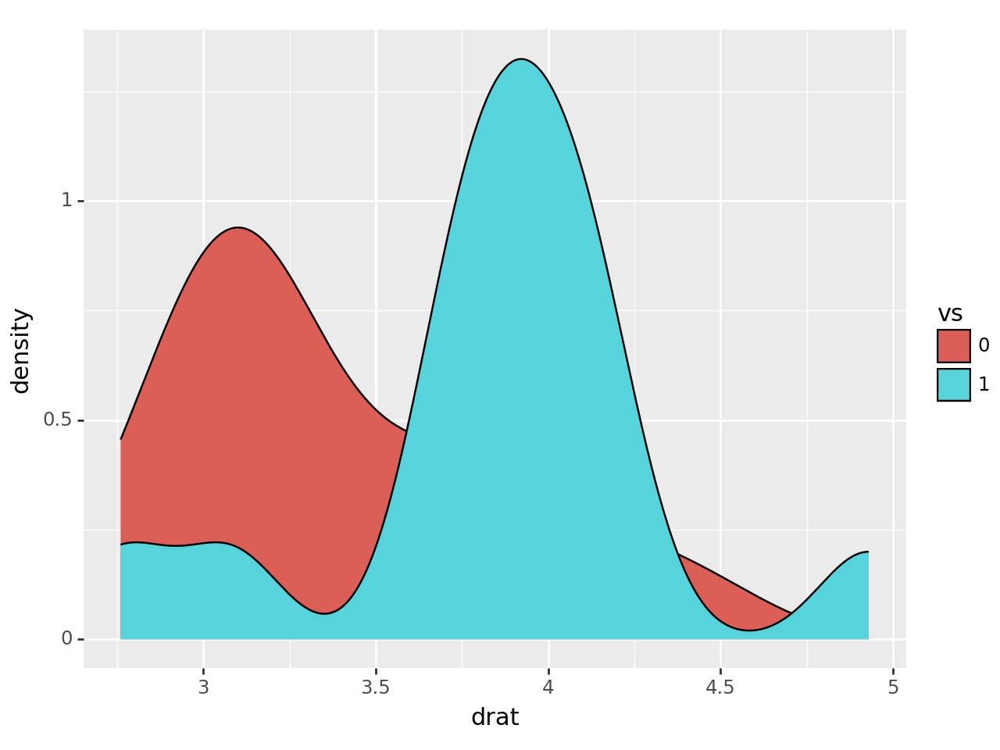
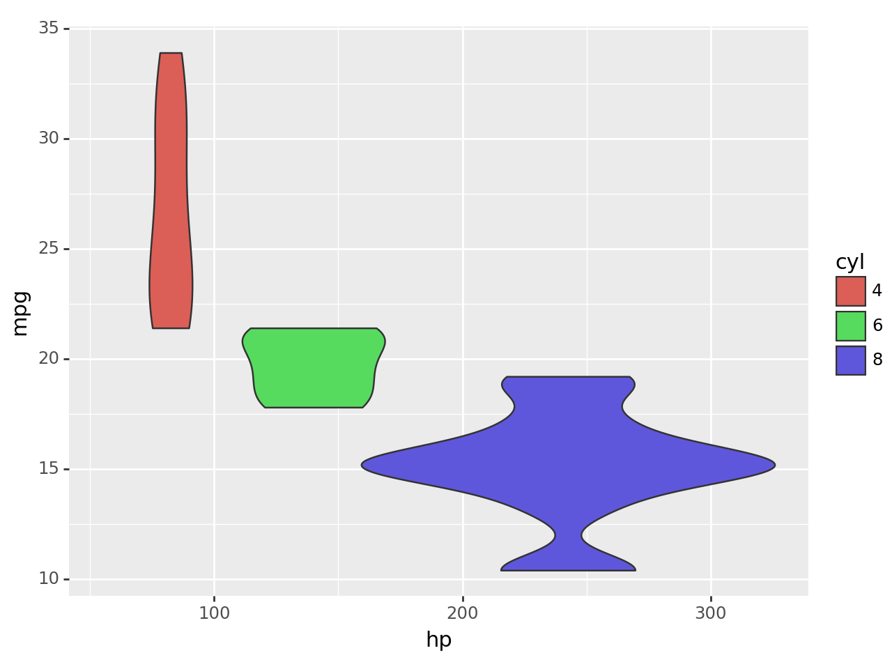

import statsmodels.api as sm
import pandas as pd
mtcars = sm.datasets.get_rdataset("mtcars", "datasets", cache=True).data
df = pd.DataFrame(mtcars)
df_untouched = pd.DataFrame(mtcars).copy()Data Visualization Using plotnine
The Palmer Penguins dataset had a variety of column types with which to explore some nice visualizations. The mtcars dataset is another popular dataset for doing some simple data work, but does not contain the same types of variables.
Run the following code to load the mtcars dataset and explore the observations and variables contained within. To learn more about this dataset check out this site
df| mpg | cyl | disp | hp | drat | wt | qsec | vs | am | gear | carb | |
|---|---|---|---|---|---|---|---|---|---|---|---|
| rownames | |||||||||||
| Mazda RX4 | 21.0 | 6 | 160.0 | 110 | 3.90 | 2.620 | 16.46 | 0 | 1 | 4 | 4 |
| Mazda RX4 Wag | 21.0 | 6 | 160.0 | 110 | 3.90 | 2.875 | 17.02 | 0 | 1 | 4 | 4 |
| Datsun 710 | 22.8 | 4 | 108.0 | 93 | 3.85 | 2.320 | 18.61 | 1 | 1 | 4 | 1 |
| Hornet 4 Drive | 21.4 | 6 | 258.0 | 110 | 3.08 | 3.215 | 19.44 | 1 | 0 | 3 | 1 |
| Hornet Sportabout | 18.7 | 8 | 360.0 | 175 | 3.15 | 3.440 | 17.02 | 0 | 0 | 3 | 2 |
| Valiant | 18.1 | 6 | 225.0 | 105 | 2.76 | 3.460 | 20.22 | 1 | 0 | 3 | 1 |
| Duster 360 | 14.3 | 8 | 360.0 | 245 | 3.21 | 3.570 | 15.84 | 0 | 0 | 3 | 4 |
| Merc 240D | 24.4 | 4 | 146.7 | 62 | 3.69 | 3.190 | 20.00 | 1 | 0 | 4 | 2 |
| Merc 230 | 22.8 | 4 | 140.8 | 95 | 3.92 | 3.150 | 22.90 | 1 | 0 | 4 | 2 |
| Merc 280 | 19.2 | 6 | 167.6 | 123 | 3.92 | 3.440 | 18.30 | 1 | 0 | 4 | 4 |
| Merc 280C | 17.8 | 6 | 167.6 | 123 | 3.92 | 3.440 | 18.90 | 1 | 0 | 4 | 4 |
| Merc 450SE | 16.4 | 8 | 275.8 | 180 | 3.07 | 4.070 | 17.40 | 0 | 0 | 3 | 3 |
| Merc 450SL | 17.3 | 8 | 275.8 | 180 | 3.07 | 3.730 | 17.60 | 0 | 0 | 3 | 3 |
| Merc 450SLC | 15.2 | 8 | 275.8 | 180 | 3.07 | 3.780 | 18.00 | 0 | 0 | 3 | 3 |
| Cadillac Fleetwood | 10.4 | 8 | 472.0 | 205 | 2.93 | 5.250 | 17.98 | 0 | 0 | 3 | 4 |
| Lincoln Continental | 10.4 | 8 | 460.0 | 215 | 3.00 | 5.424 | 17.82 | 0 | 0 | 3 | 4 |
| Chrysler Imperial | 14.7 | 8 | 440.0 | 230 | 3.23 | 5.345 | 17.42 | 0 | 0 | 3 | 4 |
| Fiat 128 | 32.4 | 4 | 78.7 | 66 | 4.08 | 2.200 | 19.47 | 1 | 1 | 4 | 1 |
| Honda Civic | 30.4 | 4 | 75.7 | 52 | 4.93 | 1.615 | 18.52 | 1 | 1 | 4 | 2 |
| Toyota Corolla | 33.9 | 4 | 71.1 | 65 | 4.22 | 1.835 | 19.90 | 1 | 1 | 4 | 1 |
| Toyota Corona | 21.5 | 4 | 120.1 | 97 | 3.70 | 2.465 | 20.01 | 1 | 0 | 3 | 1 |
| Dodge Challenger | 15.5 | 8 | 318.0 | 150 | 2.76 | 3.520 | 16.87 | 0 | 0 | 3 | 2 |
| AMC Javelin | 15.2 | 8 | 304.0 | 150 | 3.15 | 3.435 | 17.30 | 0 | 0 | 3 | 2 |
| Camaro Z28 | 13.3 | 8 | 350.0 | 245 | 3.73 | 3.840 | 15.41 | 0 | 0 | 3 | 4 |
| Pontiac Firebird | 19.2 | 8 | 400.0 | 175 | 3.08 | 3.845 | 17.05 | 0 | 0 | 3 | 2 |
| Fiat X1-9 | 27.3 | 4 | 79.0 | 66 | 4.08 | 1.935 | 18.90 | 1 | 1 | 4 | 1 |
| Porsche 914-2 | 26.0 | 4 | 120.3 | 91 | 4.43 | 2.140 | 16.70 | 0 | 1 | 5 | 2 |
| Lotus Europa | 30.4 | 4 | 95.1 | 113 | 3.77 | 1.513 | 16.90 | 1 | 1 | 5 | 2 |
| Ford Pantera L | 15.8 | 8 | 351.0 | 264 | 4.22 | 3.170 | 14.50 | 0 | 1 | 5 | 4 |
| Ferrari Dino | 19.7 | 6 | 145.0 | 175 | 3.62 | 2.770 | 15.50 | 0 | 1 | 5 | 6 |
| Maserati Bora | 15.0 | 8 | 301.0 | 335 | 3.54 | 3.570 | 14.60 | 0 | 1 | 5 | 8 |
| Volvo 142E | 21.4 | 4 | 121.0 | 109 | 4.11 | 2.780 | 18.60 | 1 | 1 | 4 | 2 |
The statement “the mtcars dataset does not contain the same types of variables as the penguins dataset” is a little true and a little false. There are no variables that contain text values, BUT there are variables that it makes sense to consider categorical variables. In most situations, it makes sense to treat the values of categorical variables as text values instead of numeric values.
Use the astype() method to convert the categorical variables of the mtcars (df) dataset to have text values in the code chunk below. We’ve done one for you!
df["am"] = df["am"].astype(str)
df["am"] = df["am"].astype(str)
df["vs"] = df["vs"].astype(str)
df["cyl"] = df["cyl"].astype(str)
df["carb"] = df["carb"].astype(str)
df['gear'] = df['gear'].astype(str)
df.info()<class 'pandas.core.frame.DataFrame'>
Index: 32 entries, Mazda RX4 to Volvo 142E
Data columns (total 11 columns):
# Column Non-Null Count Dtype
--- ------ -------------- -----
0 mpg 32 non-null float64
1 cyl 32 non-null object
2 disp 32 non-null float64
3 hp 32 non-null int64
4 drat 32 non-null float64
5 wt 32 non-null float64
6 qsec 32 non-null float64
7 vs 32 non-null object
8 am 32 non-null object
9 gear 32 non-null object
10 carb 32 non-null object
dtypes: float64(5), int64(1), object(5)
memory usage: 3.0+ KBIf you print out your new dataset, is it clear that the variables have been converted to text values? If so, how can you tell?
It should also be clear by how plotnine treats these variables.
Create side-by-side boxplots of the
mpgvariable by the different values of theamvariable. What happens if you convert theamvariable back to float values and then try to create this same plot? Explain the differences between the two plots.Create overlaid histograms of the
hpvariable for the different values of thecylvariable. What happens if you convert thecylvariable back to float values and then try to create this same plot? Explain the differences between the two plots.
import plotnine as p9# Create plot for (1) here
# AM as categorical
(p9.ggplot(data = df,
mapping = p9.aes(x = 'am', y = 'mpg', fill = 'am'))
+ p9.geom_boxplot()
)
<Figure Size: (640 x 480)># AM as numeric
(p9.ggplot(data = df_untouched,
mapping = p9.aes(x = 'am', y = 'mpg', fill = 'am'))
+ p9.geom_boxplot()
)
<Figure Size: (640 x 480)>When we have AM as categorical, it creates two box plots for each category (automatic and manual). When we have AM as a numeric, it only creates one boxplot with the average value of AM as the x-axis.
# Create plot for (2) here
(p9.ggplot(data = df,
mapping = p9.aes(x = 'hp', fill = 'cyl'))
+ p9.geom_histogram()
)/usr/local/lib/python3.10/dist-packages/plotnine/stats/stat_bin.py:109: PlotnineWarning: 'stat_bin()' using 'bins = 6'. Pick better value with 'binwidth'.
<Figure Size: (640 x 480)># Cyl as a float
(p9.ggplot(data = df_untouched,
mapping = p9.aes(x = 'hp', fill = 'cyl'))
+ p9.geom_histogram()
)/usr/local/lib/python3.10/dist-packages/plotnine/stats/stat_bin.py:109: PlotnineWarning: 'stat_bin()' using 'bins = 6'. Pick better value with 'binwidth'.
<Figure Size: (640 x 480)>Although the shape of the histogram is the same, there is only one fill color for cyl when it is a float. This is because it is considering cyl as one “category” or a value and does not differeniate from the different value levels.
Some of these variables, like the cyl variable, have numeric values that actually make sense as numbers (i.e. the number of cylinders in the engine). However, it doesn’t make the most sense to “do math” with this type of variable (e.g. take averages and such) because there are so few different value this can take on AND they’re an explicit choice made by the car manufacturer. So, it makes more sense to treat the cyl variable as a categorical variable despite it having numeric values.
You will need to keep these kinds of nuances about data in mind as you work with an increasing variety and richness of data, and do more complex things with them.
Choose 3 new geometries from the data-to-viz website for graphs that you’d like to explore using the mtcars dataset, and then create those graphs!
# Create plot with first new geometry here
(p9.ggplot(data = df,
mapping = p9.aes(x = 'wt', y = 'mpg', fill = 'am'))
+ p9.geom_point()
)
<Figure Size: (640 x 480)># Create plot with second new geometry here
(p9.ggplot(data = df,
mapping = p9.aes(x = 'drat', fill = 'vs'))
+ p9.geom_density()
)
<Figure Size: (640 x 480)># Create plot with third new geometry here
(p9.ggplot(data = df,
mapping = p9.aes(x = 'hp', y = 'mpg', fill = 'cyl'))
+ p9.geom_violin()
)/usr/local/lib/python3.10/dist-packages/plotnine/positions/position.py:229: PlotnineWarning: position_dodge requires non-overlapping x intervals
<Figure Size: (640 x 480)>